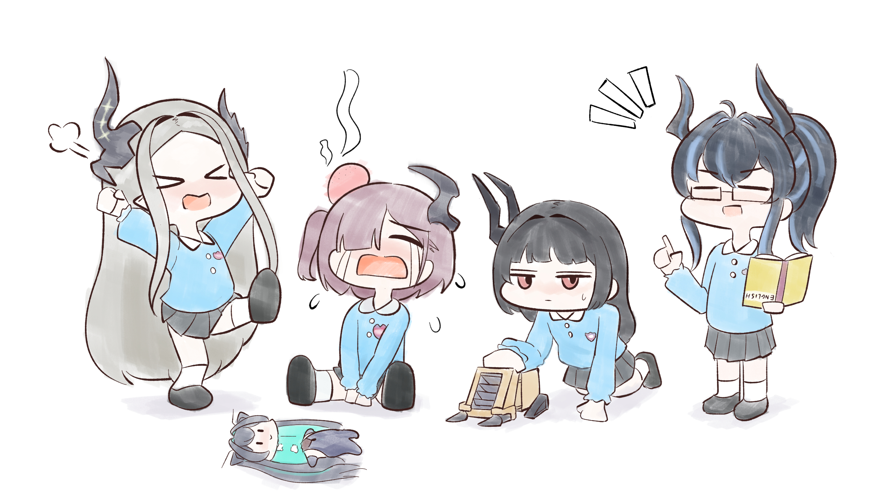
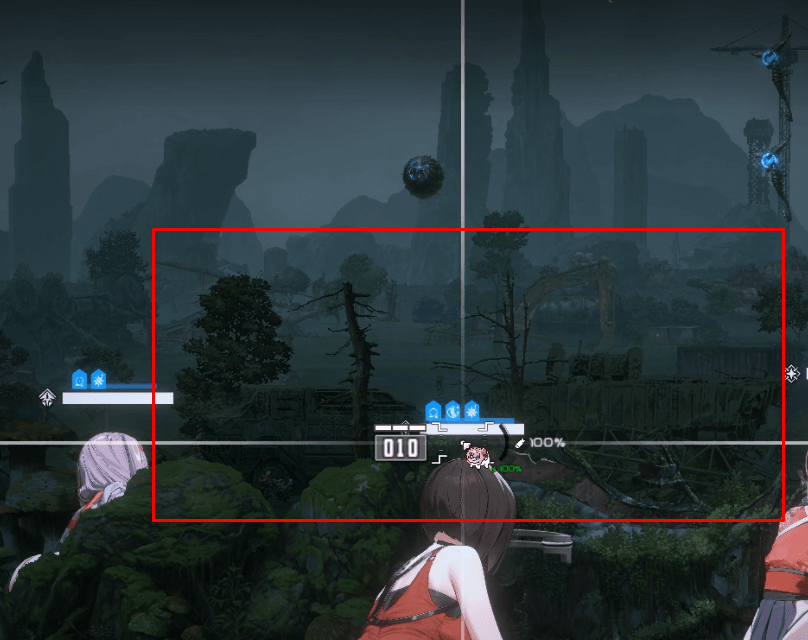
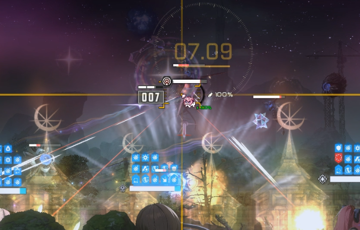
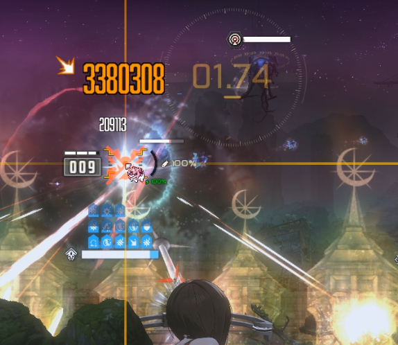
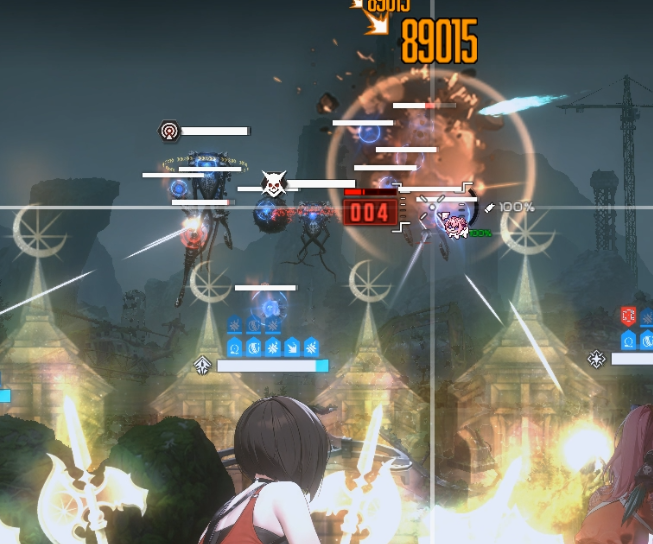
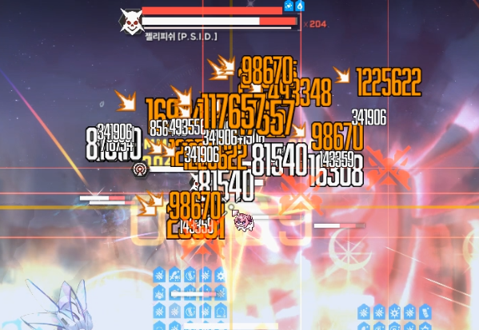
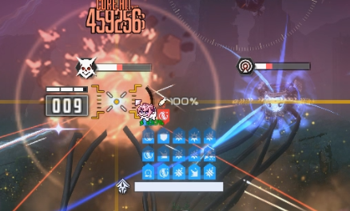

준비물이 아다웡이라는 사소한 문제가 있지만
웡 없으면 시발 글게용 우짜지ㅋㅋ..
목단으로 탱탱볼 딜을 탱킹하거나
엄폐하고 아인으로 일일히 맞출필요가 전혀 없이
예전부터 훌륭한 탱탱볼 처리 방법 중 하나였던 분배뎀을 쓰는 흑련을 간만에 꺼내쓸거임
다른 잡몹은 아니스가 쓸어담고 탱탱볼만 흑련이 고로시하는 조합이다

1. 웡을 잡고 엄폐물에 버충을 땡긴다
2초도 안돼서 버스트 켤 수 있을거임
톡톡이 안절고 최대한 빨리 켜면 켤수록 좋다

2. 성공적으로 탱탱볼과 잡몹처리에 성공했다면
기어나오는 젤리피쉬 중간보스를 점사한다
중간중간 탱탱볼하고 죽창몹이 계속 보급될텐데
어짜피 아니스랑 흑련이 나오자마자 죽이니 신경끄고 젤리피쉬만 집요하게 팬다

3. 흑련 버스트가 끝나기 전에 젤리피쉬 하나를 죽였다면
아까 맨처음에 버충한 엄폐물을 이용해서 바로 버충을 땡겨서 웡 버스트를 켜고
다음으로 나온 젤리피쉬를 죽인다
이때 웡 아니스 스펙이 좋은 사람은 웡 차지샷은 쏘지 말고 섬광탄으로만 말려죽여서
너무 빨리 젤리피쉬를 잡지 않도록 하면 된다
한 풀버스트 5~6초 남는 타이밍에 잡히면 된다
4. 젤리피쉬 잡고 오른쪽, 왼쪽에서 탱탱볼과 잡몹이 나오는데
절대 직접 조준하지 말고 섬광탄으로 죽인다
오른쪽 탱탱볼을 잡았으면 이제 왼쪽에서도 탱탱볼이 나올텐데
마찬가지로 직접 조준하지 말고 섬광탄으로 죽인다

5. 젤리피쉬 보스가 잡몹과 함께 쏟아져나오는데
웡으로 아까 버충할 때 이용한 엄폐물을 이용해서 빠르게 버충을 하고
아니스-메스트-흑련 풀버를 켠다
나는 공중잡몹 쏴서 버충했는데
버스트 한 2초정도 밀렸으니 걍 엄폐물로 버충 땡겨서 쓰는게 좋다

일단 버스트를 켜는데 성공했다면
잡몹은 메스트 3스택 버프를 받은 아니스가 싹다 쓸어담을거고
흑련으로 보스 때리면서 자연스럽게 탱탱볼까지 잡힌다
걍 머리비우고 보스만 존나 패면 된다

보스를 패는데 옆에 있는 젤리피쉬 중간보스마저 같이 말라죽는 모습을 볼 수 있다
이것이 아니스의 힘이다
이 택틱을 하면서 누가 죽지 않는 세계선만 찾으면 되는데
탱탱볼이 누구 하나를 고로시하기 전에 흑련이 찢어죽이면 되는 문제라
쉽고 리트 많이 하지 않아도 된다
나도 아인웡으로 하다가 걍 흑련꺼내고 리트 3번만에 깼다
아니스 = 신